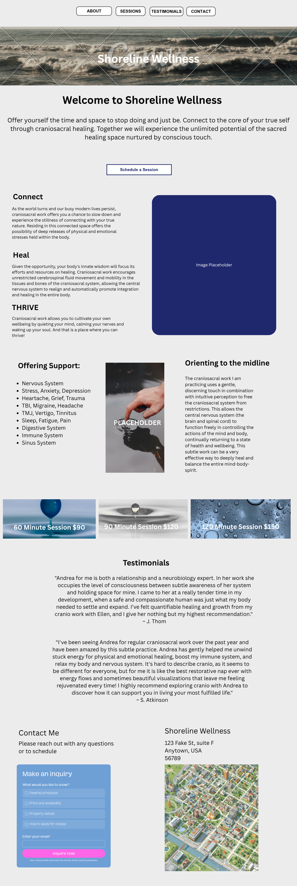
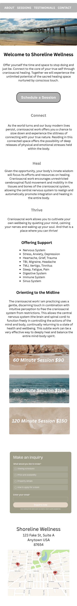

The Hero section will serve as the introduction to the practice and will immediately communicate the purpose of the website. It will include a welcoming headline, a brief description of the practice, and a call-to-action encouraging visitors to learn more about services or schedule an appointment. A calming background image will help create a professional and welcoming first impression.
A fixed navigation menu will allow users to easily move between sections of the site. Navigation links will scroll users directly to the selected section, creating a simple and user-friendly browsing experience.
This section will provide an overview of the practice, its philosophy, and the approach used to support clients. Content will focus on creating trust and helping visitors understand the purpose and goals of the practice. This section will serve as an introduction for potential clients who may be unfamiliar with the services being offered.
The Services section will describe the treatments and services offered by the practice. Each service will include a short description explaining its purpose, potential benefits, and who it may be appropriate for.
This section will highlight the potential benefits clients may experience from treatment. Content will focus on common concerns, wellness goals, and areas where services may provide support.
The About the Practitioner section will introduce the practitioner including her professional background, training, certifications, and experience. A professional photo and biography will help establish credibility and create a personal connection with visitors.
The Testimonials section will feature feedback and success stories from previous clients. This content will help build trust and provide social proof for potential clients considering services. Testimonials may be displayed using cards.
The Contact section will provide visitors with multiple ways to connect with the practice. Content will include contact information, location details, office hours, and a contact form.

